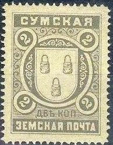

Return To Catalogue - Go to Zemstvos overview - Russia
Note: on my website many of the
pictures can not be seen! They are of course present in the
catalogue;
contact me if you want to purchase it.
1881 Value
5 k blue
Reprints of this stamp exist.
(Sorry, no pictures available yet)
3 k blue 3 k yellow (extremely rare)
3 k blue 3 k yellow (exists imperforated)
Forgeries: I know that at least the 3 k blue value has been forged by a forger from Hialeah Florida; large numbers of these forgeries are offered on Ebay. General remarks about these forgeries: the forger has probably used a computer scanner and printer, the details are mostly lost in most of his forgeries, the paper is modern and the size does in general not correspond to genuine stamps.
3 k blue 3 k red

3 k violet 3 k black on blue 3 k black on brown
(Reduced sizes)


3 k red 3 k green 3 k blue
4 types with different ornaments in the corners exist.
3 k blue 3 k brown 3 k orange 3 k green

5 k blue

5 k red

5 k red, lilac and blue
Image reproduced with permission from: http://www.sandafayre.com

1 k blue (extremely rare) 2 k green 3 k red (2 types, large and small numeral) 5 k red (1870) Surcharged '5' on 1 k blue '5' on 2 k green '5' on 3 k red '6' on 5 k red (1872)

2 k grey on yellow 5 k red on grey
(Reduced size)
5 k blue on red

(Reduced sizes)
3 k blue 3 k black 5 k lilac

(Reduced sizes)
2 k brown 3 k green 5 k blue


{kind=link}
{kind=link}